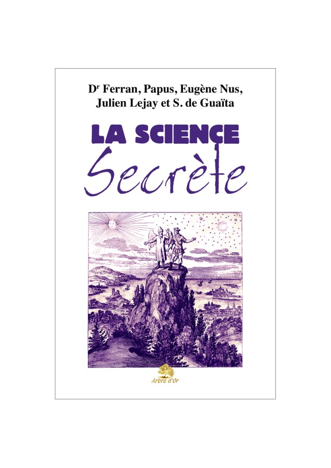

La Science secrète




Carte d’identité
- Auteur
- Dr Ferran, Papus, Eugène Nus, Julien Lejay et S. de Guaïta
- Genre
- Spiritualités et religions
- Sous-genre
- Ésotérisme
- Éditeur
- Arbre d’Or
- Parution de l’édition
- 2009
- Première parution
- 1890
- ISBN
- Non confirmé
- Langue de l’édition
- Français
- Fichier du site
- PDF · 90 pages
Recueil collectif paru en 1890. Édition numérique Arbre d’Or, décembre 2009.
Ouvrage collectif ; noms repris sur la page de titre du PDF.
 Résumé du livreL’essentiel en quelques lignes
Résumé du livreL’essentiel en quelques lignes
Cinq contributions de la fin du XIXᵉ siècle réunissent franc-maçonnerie, Kabbale, théosophie, économie politique et initiation martiniste. Chacune suit sa propre logique. L’ensemble donne à lire la manière dont certains auteurs de l’époque rapprochaient traditions spirituelles, symboles et organisation de la société.
 Contributions5 entrées
Contributions5 entrées
-
01 Rites et symboles maçonniquesPDF p. 4
Le Dr Ferran lit les gestes et les emblèmes de la franc-maçonnerie à la lumière de traditions plus anciennes. Il construit une filiation symbolique qui reflète les idées du recueil.
Lire à cette page ↗ -
02 Les interprétations de la KabbalePDF p. 19
Papus présente une lecture occultiste de la tradition kabbalistique. Les lettres, les nombres et les correspondances lui servent à relier différents niveaux de réalité.
Lire à cette page ↗ -
03 La théosophie selon Eugène NusPDF p. 39
Nus expose une vision de l’existence où l’évolution de l’être humain se prolonge sur le plan spirituel. Il rapproche plusieurs traditions pour expliquer son modèle.
Lire à cette page ↗ -
04 Occultisme et économie politiquePDF p. 64
Julien Lejay applique son cadre ésotérique à l’organisation sociale et aux échanges. Cette contribution déplace la discussion des symboles vers le travail, les richesses et les rapports entre les personnes.
Lire à cette page ↗ -
05 La réception martinistePDF p. 84
Le discours final s’adresse à une personne qui entre dans le martinisme. Stanislas de Guaïta décrit l’initiation comme un engagement qui demande discrétion et travail sur soi.
Lire à cette page ↗
Les fils du livre


Mon carnet de lecture
Mes étoiles
0 critique
Ma critique sur ce livre ↗